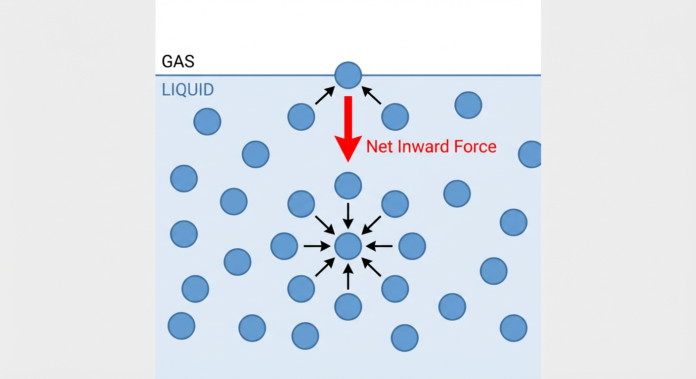

表面能、表面张力和润湿性是控制材料行为和自然界现象的核心物理化学概念。从一滴水在叶片上的形态，到先进涂层的性能，再到生物细胞的黏附，这些无处不在的界面现象都由分子间作用力的微妙平衡所主导。理解并掌控这些原理对于材料设计、工程优化和生命科学研究至关重要。然而，从理想化的教科书模型到真实世界中粗糙、动态且化学性质复杂的表面，理论与实践之间存在着显著的鸿沟。本文旨在弥合这一差距，系统性地将基本原理与前沿应用联系起来。
本文将引导读者进行一次从基础到应用的探索之旅。在“原理与机制”一章中，我们将建立坚实的理论基础，从杨氏方程和吉布斯吸附理论出发，逐步深入到描述真实表面复杂性的修正模型。随后的“应用与跨学科交叉”一章将展示这些原理如何在材料科学、软物质物理、传热学和生物学等领域催生创新技术和深刻见解。最后，“动手实践”部分将通过一系列计算问题，巩固您对关键概念的理解，并培养解决实际问题的能力。让我们首先深入探究这些迷人现象背后的基本原理与机制。
本章旨在系统性地阐述控制材料表面和界面行为的基本原理。我们将从理想化的模型出发，逐步深入到描述真实世界复杂性的 refined 理论。内容涵盖了从单一液相的表面张力到多相体系中的润湿现象，并探讨了非理想表面（如粗糙、化学非均相和可变形表面）对这些行为的影响。
在宏观尺度上，液体倾向于使其表面积最小化，这种行为的根源在于分子间的作用力。位于液体内部的分子受到来自四面八方、方向各异的吸引力，这些力在统计上相互抵消。然而，位于液体表面的分子则经历着一种不平衡的力场：它们受到来自液体内部同类分子的强烈吸引，而来自上方稀疏气相分子的吸引力则弱得多。这种净指向液体内部的内向拉力导致表面分子比内部的分子具有更高的势能。

为了创造新的表面积，系统必须做功，以克服这种内向的分子间 cohesive forces，将分子从内部“提升”到表面。因此，表面储存了额外的能量，这被称为表面自由能 (surface free energy)。从热力学角度看，单位面积的表面自由能，记为 $\gamma$，定义为在恒温恒压下，可逆地增加单位表面积所需的功。
从力学角度看，这种能量效应表现为一种作用于表面上任意一条线的、力图收缩表面积的张力。这种单位长度上的力被称为表面张力 (surface tension)。对于简单的流体界面，在平衡状态下，力学上的表面张力与热力学上的单位面积表面自由能在数值上是等价的 。因此，我们通常可以互换使用这两个术语，其单位既可以是能量/面积（如 $J/m^2$），也可以是力/长度（如 $N/m$）。
表面张力最直接的宏观表现之一是弯曲界面两侧的压力差。一个半径为 $R$ 的球形气泡或液滴，其内外压力差 $\Delta p = p_{\text{in}} - p_{\text{out}}$ 由杨-拉普拉斯方程 (Young-Laplace equation) 描述。通过最小化系统的总亥姆霍茲自由能（包括体相贡献和界面贡献），我们可以推导出这一关系。考虑一个半径为 $R$ 的球形气泡，其界面自由能为 $F_s = \gamma A = \gamma (4\pi R^2)$。当气泡半径发生微小虚拟变化 $dR$ 时，体积功和界面能的变化必须相互平衡。这导致了经典的关系式：
$$ \Delta p = \frac{2\gamma}{R} $$
这个方程表明，曲率越大（即半径 $R$ 越小），维持界面平衡所需的压力差就越大。
对于非常小的液滴或气泡（通常在纳米尺度），表面张力 $\gamma$ 本身可能不再是一个常数，而是依赖于界面的曲率。这种效应可以通过托尔曼长度 (Tolman length) $\delta_T$ 来描述，它是对 $\gamma$ 的一阶曲率修正。托尔曼展开式将曲率依赖的表面张力 $\gamma(R)$ 表示为：
$$ \gamma(R) = \gamma_{\infty} \left(1 - \frac{2\delta_T}{R}\right) $$
其中 $\gamma_{\infty}$ 是平面界面（$R \to \infty$）的表面张力。将这个曲率依赖的 $\gamma(R)$ 代入通过亥姆霍茲自由能最小化推导出的广义杨-拉普拉斯方程 $\Delta p = \frac{2\gamma(R)}{R} + \frac{d\gamma}{dR}$，我们可以得到包含一阶修正的压力差表达式 ：
$$ \Delta p = \frac{2\gamma_{\infty}}{R} - \frac{2\gamma_{\infty}\delta_{T}}{R^{2}} $$
这个结果揭示了在纳米尺度下，经典理论需要被修正，界面性质变得与尺寸相关。
当液体中含有溶质时，溶质分子可能会在表面区域富集或贫化，从而改变表面的性质。为了在热力学上严谨地处理这个物理上具有一定厚度的界面区域，吉布斯模型 (Gibbs model) 提供了一个强大的理想化框架 。该模型将真实的、具有有限厚度的界面区域用一个零厚度的数学平面——吉布斯分割面 (Gibbs dividing surface)——来替代。然后，假想两个体相（如液体和蒸气）的性质一直延伸到这个分割面处。
系统中任何广延量（如组分的摩尔数）的表面过剩量 (surface excess) $\Gamma_i$ 定义为真实系统中该量的总值与吉布斯模型中两个理想体相所含该量之和的差值，再除以界面面积。一个关键点是，$\Gamma_i$ 的数值取决于分割面的任意位置。
我们可以利用这种任意性来简化描述。对于一个溶剂（组分1）和溶质（组分2）组成的二元溶液，最方便的约定是选择一个特定的分割面位置，使得溶剂的表面过剩量为零，即 $\Gamma_1 = 0$ 。在此约定下，溶质的表面过剩量 $\Gamma_2$ 就成了一个与分割面位置无关的、具有明确物理意义的量，称为相对吸附 (relative adsorption)。
基于此约定，吉布斯吸附等温线 (Gibbs adsorption isotherm) 描述了在恒温恒压下，表面张力 $\gamma$ 的变化与溶质化学势 $\mu_2$ 变化之间的关系 ：
$$ d\gamma = -\Gamma_2 d\mu_2 $$
由于理想稀溶液的化学势变化满足 $d\mu_2 = RT d\ln a_2$（其中 $a_2$ 是溶质的活度），我们可以得到一个极具应用价值的关系式：
$$ \Gamma_2 = -\frac{1}{RT}\left(\frac{\partial\gamma}{\partial\ln a_2}\right)_{T,p} $$
这个方程的意义非凡：它将一个宏观可测量——表面张力随溶质浓度的变化率——与一个微观界面性质——溶质在界面的相对吸附量——直接联系起来。实验上，如果观察到加入某种溶质后，溶液的表面张力下降了 ($\partial\gamma/\partial\ln a_2 0$)，那么根据吉布斯吸附等温线，该溶质在界面的吸附量必然为正 ($\Gamma_2 > 0$)。这类优先富集于表面并降低表面张力的物质被称为表面活性剂 (surfactants) 。
当液体液滴放置在固体表面上时，会出现润湿现象。在一个理想的系统——即固体表面是刚性的、光滑的、化学均匀的——液滴会形成一个特定的接触角 (contact angle) $\theta$。这个角度是在固-液-气三相接触线处，通过液体内部测量的液-气界面切线与固-液界面的夹角 。
接触角的大小由三相界面张力之间的平衡决定。在三相接触线上，我们可以分析作用在单位长度上的力： 1. 固-气界面张力 $\gamma_{sv}$，沿固-气界面方向拉动接触线，使其倾向于铺展。 2. 固-液界面张力 $\gamma_{sl}$，沿固-液界面方向拉动接触线，使其倾向于收缩。 3. 液-气界面张力 $\gamma_{lv}$，沿液-气界面切线方向作用。其在固体表面上的水平分量为 $\gamma_{lv}\cos\theta$，方向与 $\gamma_{sl}$ 相同，共同抵抗铺展。
在力学平衡时，这些沿固体表面方向的力必须相互抵消，这便得到了著名的杨氏方程 (Young's equation) ：
$$ \gamma_{sv} = \gamma_{sl} + \gamma_{lv}\cos\theta $$
或写作：
$$ \gamma_{sv} - \gamma_{sl} - \gamma_{lv}\cos\theta = 0 $$
杨氏方程为我们提供了一个从可测量的宏观接触角 $\theta$ 来探究不可直接测量的固体表面能的途径。
为了更深入地理解润湿的能量本质，我们可以引入另外两个热力学量。杜普雷附着功 (Dupré work of adhesion) $W_{sl}$ 是指在可逆条件下，将单位面积的固-液界面分离成一个固-气界面和一个液-气界面所需的功。根据能量守恒，它等于界面自由能的变化：
$$ W_{sl} = \gamma_{sv} + \gamma_{lv} - \gamma_{sl} $$
内聚功 (work of cohesion) $W_{ll}$ 是指在可逆条件下，将液体柱拉开形成两个单位面积的液-气界面所需的功，因此 $W_{ll} = 2\gamma_{lv}$。
通过将杨氏方程 ($\gamma_{sv} - \gamma_{sl} = \gamma_{lv}\cos\theta$) 代入附着功的定义，我们可以得到一个连接宏观接触角和微观附着能的重要关系式，即杨-杜普雷方程 (Young-Dupré equation) ：
$$ W_{sl} = \gamma_{lv}(1 + \cos\theta) $$
这个方程表明，液体对固体的附着功可以通过测量液体自身的表面张力和接触角来确定。
预测液体在固体上是形成液滴（部分润湿）还是完全铺展（完全润湿）是润湿科学的核心问题之一。铺展系数 (spreading coefficient) $S$ 为此提供了直接的判据。它被定义为当液体在固体上铺展一个单位面积时系统自由能的减少量 ：
$$ S = \gamma_{sv} - (\gamma_{sl} + \gamma_{lv}) = \gamma_{sv} - \gamma_{sl} - \gamma_{lv} $$
杨氏方程所描述的理想世界在现实中很少存在。真实的固体表面往往是粗糙的、化学非均相的，甚至是可变形的。这些非理想因素导致了与理想模型显著偏离的复杂行为。
表面粗糙度破坏了杨氏方程中“光滑”的假设。其影响主要通过两种模型来描述 ：
文策尔模型 (Wenzel model)：该模型假设液体完全填充了表面的沟壑，没有截留气体。粗糙度使得真实的固-液接触面积大于其投影面积。定义粗糙度因子 $r$ 为真实面积与投影面积之比（$r > 1$），通过最小化总能量可以得到文策尔方程：$\cos\theta_W = r\cos\theta_Y$。其中 $\theta_Y$ 是理想平整表面上的杨氏接触角，$\theta_W$ 是粗糙表面上的表观接触角。此方程预言，粗糙度会放大材料固有的润湿性：亲水表面（$\theta_Y 90^\circ$）会变得更加亲水（$\theta_W \theta_Y$），而疏水表面（$\theta_Y > 90^\circ$）会变得更加疏水（$\theta_W > \theta_Y$）。
凯西-巴克斯特模型 (Cassie-Baxter model)：当液体无法完全渗入粗糙结构的凹陷处时，会在下方截留空气（或蒸气），形成一个固-液-气复合界面。此时，液滴实际上是坐在固体尖端和空气垫的混合体上。表观接触角 $\theta_{CB}$ 由凯西-巴克斯特方程给出：$\cos\theta_{CB} = \phi_s \cos\theta_Y + (1-\phi_s)\cos(180^\circ) = \phi_s \cos\theta_Y - (1-\phi_s)$。其中 $\phi_s$ 是液滴下方固体所占的面积分数。由于空气垫的存在（相当于接触角为 $180^\circ$ 的表面），这种状态通常会显著增加表面的疏水性，是实现超疏水效应（如荷叶效应）的关键。
真实的固体表面在化学组成上很少是完全均匀的。这种化学非均相性导致局部的 $\gamma_{sv}$ 和 $\gamma_{sl}$ 值不同，从而使得理想的杨氏接触角在表面上是位置的函数。当三相接触线移动时，它会遇到不同润湿性的区域，这些区域会像“钉子”一样钉扎 (pinning) 住接触线，形成能量势垒 。
为了克服这些势垒，接触角必须发生改变。这导致了接触角滞后 (contact angle hysteresis) 现象： * 前进角 ($\theta_A$)：当液滴体积增加或被推动时，接触线即将向前铺展到未润湿区域时测得的最大稳定接触角。 * 后退角 ($\theta_R$)：当液滴体积减少或被拉回时，接触线即将从已润湿区域收缩时测得的最小稳定接触角。
在任何有滞后效应的真实表面上，总有 $\theta_A > \theta_R$ 。杨氏方程描述的理想热力学平衡角 $\theta_Y$ 位于这个区间之内。接触角滞后 $\Delta\theta = \theta_A - \theta_R$ 是衡量表面缺陷和接触线钉扎程度的重要指标。例如，在倾斜板实验中，一个液滴开始滑动的临界条件是重力的下滑分力 $mg\sin\alpha$ 恰好克服了由接触角滞后产生的最大毛细滞留力 $F_{cap} = w \gamma_{lv}(\cos\theta_R - \cos\theta_A)$，其中 $w$ 是液滴的宽度 。
杨氏方程假设固体是刚性的。然而，对于软材料（如凝胶、弹性体），这个假设不再成立。液-气界面张力的垂直分量 $\gamma_{lv}\sin\theta$ 会对柔软的固体施加一个向上的力，导致在三相接触线处形成一个微小的润湿脊 (wetting ridge) 。这种固体的变形必须在力学平衡中予以考虑，这属于弹性毛细现象 (elastocapillarity) 的范畴。
更进一步，固体的界面力学比液体要复杂。对于固体，表面应力 (surface stress) 张量 $\Upsilon_{ij}$ 与单位面积的表面自由能 (surface free energy) $\gamma$ 不再是同一个量。表面自由能 $\gamma$ 是创造新表面积所需的功，而表面应力 $\Upsilon_{ij}$ 是弹性地拉伸一个已存在表面所需的力。两者通过夏特沃斯关系 (Shuttleworth relation) 联系起来 ：
$$ \Upsilon_{ij} = \gamma\delta_{ij} + \frac{\partial\gamma}{\partial\epsilon_{ij}} $$
其中 $\epsilon_{ij}$ 是表面应变张量，$\delta_{ij}$ 是克罗内克符号。对于液体，$\gamma$ 不依赖于应变，因此 $\partial\gamma/\partial\epsilon_{ij} = 0$，表面应力是各向同性的，$\Upsilon_{ij} = \gamma\delta_{ij}$，其大小等于表面张力。但对于固体，应变会改变原子间距和排布，从而改变表面能，因此 $\partial\gamma/\partial\epsilon_{ij}$ 项通常不为零。在分析软物质上的润湿或任何涉及固体表面变形的问题时，必须使用表面应力张量来进行正确的力学平衡分析。
正如二维界面具有表面张力一样，固-液-气三相交汇的一维接触线也具有与之对应的线张力 (line tension) $\tau$。它被定义为单位长度接触线的过剩自由能，单位是能量/长度（等效于力）。
线张力来源于接触线附近分子与体相中分子所处环境的差异。如果线张力为正（$\tau > 0$），系统会倾向于缩短接触线的长度以降低总能量。对于一个半径为 $R$ 的圆形接触线，这种效应表现为一个指向圆心的、大小为 $\tau/R$ 的径向力（单位长度）。这个额外的力必须被包含在杨氏方程的力学平衡中，得到修正的杨氏方程：
$$ \gamma_{sv} = \gamma_{sl} + \gamma_{lv}\cos\theta + \frac{\tau}{R} $$
或者：
$$ \gamma_{lv}\cos\theta = \gamma_{sv} - \gamma_{sl} - \frac{\tau}{R} $$
这个方程表明，对于小液滴（$R$ 很小），线张力效应变得显著，并会导致接触角对液滴尺寸的依赖性。例如，对于一个正的线张力，液滴越小（$R$ 越小），其平衡接触角 $\theta$ 将越大 。
在前几章中，我们已经系统地探讨了表面能、表面张力与润湿性的基本物理化学原理。这些概念不仅是理论的基石，更在众多科学与工程领域中扮演着至关重要的角色，深刻地影响着从材料设计到生物过程的各类现象。本章旨在通过一系列跨学科的应用实例，展示这些核心原理如何在真实世界的复杂情境中被应用、扩展和整合。我们将看到，对界面现象的深刻理解如何帮助我们解决实际问题，并启发创新技术的诞生。
材料的性能在很大程度上取决于其表面与界面的特性。因此，表面能与润湿性原理在材料的表征、改性及功能化设计中得到了广泛的应用。
精确量化固体的表面能对于预测其在粘接、涂层和复合材料中的行为至关重要。固体表面能通常被分解为普适存在的色散力分量（dispersive component, $\gamma^d$）和由偶极-偶极相互作用、氢键等特定作用构成的极性力分量（polar component, $\gamma^p$）。Owens-Wendt-Rabel-Kaelble (OWRK) 方法便是一种通过测量已知表面张力组分的系列“探针液体”在固体表面的接触角，来经验性地确定固体表面能色散和极性分量的实用技术。该方法基于杨氏方程和黏附功的几何平均假设，将可测量的宏观接触角$\theta$与微观的表面能分量联系起来，其核心关系式为 $\gamma_{lv}(1+\cos\theta)=2(\sqrt{\gamma_s^d\gamma_l^d}+\sqrt{\gamma_s^p\gamma_l^p})$。通过线性化该方程，并对多种探针液体进行测量，研究者可以可靠地解析出目标固体的表面能特性，从而指导材料的选择与开发。
在许多应用中，仅仅表征表面特性是不够的，我们还需要主动地对其进行改性。一个经典的例子是透射电子显微镜（TEM），特别是冷冻电镜（Cryo-EM）的样品制备过程。用于承载生物大分子样品的碳支持膜本质上是疏水的，这会导致水性样品液滴在其表面聚集收缩，无法形成均匀的薄层。这对于后续的快速冷冻以形成玻璃态冰至关重要。因此，在滴加样品之前，必须对碳膜进行“辉光放电”（glow discharge）处理。该过程利用等离子体在碳膜表面引入含氧的极性官能团，从而显著提高其亲水性。处理后的碳膜能够让水溶液均匀铺展，保证了样品颗粒的良好分散和薄冰层的形成，这是获得高分辨率结构解析的先决条件。
液体在另一不相溶液体或固体表面上的铺展行为是涂层技术、润滑、溢油处理等领域的决定性因素。一个液体能否自发地在基底上铺展，取决于铺展前后系统总界面自由能的变化。Harkins铺展系数 $S = \gamma_{SA} - (\gamma_{SL} + \gamma_{LA})$（其中S、L、A分别代表固体/液体1、液体2和空气）为这一过程提供了热力学判据。当 $S > 0$ 时，意味着用固-液和液-气界面取代原有的固-气界面的过程会降低系统总能量，因此铺展是自发有利的。例如，通过比较水-空气、油-空气和油-水之间的界面张力，我们可以预测油滴是否会在水面上自发铺展。
铺展动力学则更为复杂，它描述了铺展过程的速度。对于在完全润湿表面上铺展的小液滴，其铺展速率通常受到液体自身黏性耗散的限制，其半径 $R$ 随时间 $t$ 的增长遵循著名的Tanner定律，即 $R \sim t^{1/10}$。然而，在某些情况下，例如在发生化学反应的“反应性润湿”中（如液态焊料在金属基板上的铺展），速率的限制因素可能不再是黏性，而是三相接触线处的界面反应动力学。在这种反应限制的机制下，铺展速率会显著加快，其半径增长的标度律变为 $R \sim t^{1/7}$。理解并区分这些不同的动力学机制对于控制和优化焊接、涂层固化等工业过程至关重要。
近年来，通过微纳加工技术构筑具有特殊润湿性的功能表面，已成为材料科学的前沿热点。著名的“超疏水”表面，其设计灵感常来自于荷叶，便是通过在疏水材料表面构建微观粗糙结构实现的。这种表面的润湿行为通常可以用两种理想模型来描述：Wenzel模型和Cassie-Baxter模型。Wenzel态描述了液体完全侵入并润湿粗糙结构的沟壑，而Cassie-Baxter态则描述了液体“悬浮”在粗糙结构顶端，在下方捕获了空气（或蒸汽）形成复合界面的情景。
这两种状态并非总是稳定共存的，它们之间存在一个能量壁垒。通过精确计算从Cassie态转变为Wenzel态的吉布斯自由能变化 $\Delta G = G_W - G_C$，可以评估非润湿态的稳定性。例如，对于一个由微米级柱阵列构成的表面，可以通过几何计算和界面能分析，推导出该能量壁垒的表达式，它依赖于材料的本征接触角以及微结构的几何参数（如柱高、半径和间距）。更有趣的是，我们可以通过外部刺激来主动调控这两种状态的转变。例如，通过施加电场来改变固-液界面能（即电润湿效应），可以诱导液滴从稳定的Cassie态塌陷至Wenzel态。这种可逆的润湿性切换为微流控芯片、自清洁表面和智能光学器件的设计提供了新的可能性。
表面张力不仅决定了静态的界面形态，其本身或其梯度更能驱动宏观的物质运动，这在软物质物理和流体动力学中表现得尤为突出。
传统上，我们认为表面张力只对液体形状有显著影响。然而，对于非常柔软的固体（如凝胶、弹性体和生物组织），表面张力的作用足以使其发生肉眼可见的变形，这一交叉学科领域被称为弹性毛细现象（elastocapillarity）。通过平衡驱动变形的毛细应力（$\sigma_{cap} \sim \gamma/L$）和抵抗变形的弹性恢复应力（$\sigma_{el} \sim E u/L$），我们可以推导出一个关键的本征长度标度——弹性毛细长度 $L_{ec} \sim \gamma/E$。其中 $\gamma$ 是表面张力，$E$ 是固体的杨氏模量，$L$ 和 $u$ 分别是变形的横向和纵向尺度。这个长度标度标志着毛细力与体弹性的主导权更迭：在远大于 $L_{ec}$ 的尺度上，固体表现为刚性；而在远小于 $L_{ec}$ 的尺度上，表面张力占据主导，固体甚至会表现出类似液体的行为。
“毛细折纸”（capillary origami）是弹性毛细现象一个引人注目的例子。当一滴液体放置在一张极薄的弹性薄片上时，液滴的表面张力可以驱动薄片发生弯曲、折叠甚至将自身完全包裹起来。这种行为的发生取决于毛细能的释放（与 $\gamma L^2$ 成正比）和弯曲薄片所需的弹性应变能（与弯曲刚度 $B$ 成正比）之间的竞争。这场“拔河比赛”的结果由一个无量纲参数——弹性毛细数 $\mathrm{Ec} = \gamma L^2 / B$ 决定。只有当 $\mathrm{Ec}$ 超过一个临界值时，折叠才会发生。这一原理不仅解释了自然界中的一些现象，还被用于驱动微米级的自组装结构。
液体自由表面上表面张力的不均匀分布会产生一种切向应力，从而驱动液体从低表面张力区域流向高表面张力区域，这种现象被称为Marangoni效应。一个常见的例子是“酒泪”现象。更具工程意义的是，温度梯度通常会引起表面张力梯度，因为液体的表面张力大多随温度升高而降低。考虑一个水平放置的薄液膜，如果在其上施加一个恒定的温度梯度 $G = dT/dx$，液膜就会在Marangoni应力 $\tau_M = d\gamma/dx = (\partial\gamma/\partial T)(dT/dx)$ 的驱动下开始流动。在润滑近似下，可以解析地求解出液膜内的速度分布，其平均速度为 $\overline{U} = (G h / 2\mu) (\partial\gamma/\partial T)$，其中 $h$ 是膜厚，$\mu$ 是黏度。Marangoni流在晶体生长、焊接、薄膜涂布以及微流控技术中都扮演着关键角色。
表面活性剂是一类能够显著降低液体表面张力的两亲性分子。它们通过优先吸附在液-气或液-液界面来发挥作用。吉布斯吸附等温线方程 $d\gamma = - \sum_i \Gamma_i d\mu_i$ 将宏观可测的表面张力变化 $d\gamma$ 与界面上组分的表面过剩浓度 $\Gamma$ 和化学势 $\mu$ 联系起来。对于一个简单的表面活性剂水溶液，该方程可以简化为 $d\gamma/d(\ln c) = - \Gamma RT$。这意味着，通过测量表面张力随浓度变化的斜率，我们可以直接计算出表面活性剂分子在界面上的吸附量 $\Gamma$。当界面被分子吸附饱和时，$\Gamma$ 达到最大值 $\Gamma_{sat}$，由此可以计算出每个分子在界面上占据的极限面积 $A_{lim} = 1/(\Gamma_{sat} N_A)$。这个参数是衡量表面活性剂效率和设计乳液、泡沫、洗涤剂等配方的核心依据。
润湿性对沸腾、冷凝等相变过程的效率有着决定性的影响，是强化传热技术的核心研究内容。
表面的润湿性直接决定了在其上发生的相变传热模式。以冷凝为例，蒸汽在固体表面的凝结可以分为膜状冷凝和滴状冷凝。膜状冷凝通常发生在亲水表面，凝结的液滴会迅速铺展并汇合成一层连续的液膜，这层液膜构成了显著的热阻，阻碍了热量从蒸汽传递到壁面。滴状冷凝则发生在疏水表面，凝结的液滴保持球形，长大后在重力或蒸汽流作用下滚落，带走热量的同时裸露出新的表面以供冷凝，其传热效率可比膜状冷凝高出一个数量级。表面的微观粗糙度会通过Wenzel效应进一步放大其本征润湿性。例如，一个本征亲水（$\theta 90^\circ$）的表面在经过粗糙化处理后，其表观接触角会变得更小，从而更加促进膜状冷凝的发生，这对于追求高效传热的应用来说是不利的。
在核态沸腾（或称泡核沸腾）中，总传热效率由三个关键因素的乘积决定：单位面积上的活性成核点密度 $N_a$、单个成核点的气泡脱离频率 $f$ 以及气泡脱离时的直径 $d_d$。表面的润湿性（通过接触角 $\theta$ 表征）深刻地影响着这三个参数。首先，疏水表面（较大的$\theta$）更容易在其微观腔体内捕获和稳定蒸汽胚，因此在相同的壁面过热度下，疏水表面上的活性成核点密度 $N_a$ 更高。其次，气泡在脱离表面前受到浮力和表面张力黏附力的共同作用，较大的接触角通常意味着更强的黏附力，需要更大的浮力才能克服，因此气泡会长得更大才会脱离，即 $d_d$ 随 $\theta$ 增大而增大。最后，气泡的生长和脱离周期与惯性-毛细时间标度有关，频率 $f$ 通常与 $d_d^{-3/2}$ 成比例，因此 $f$ 随 $\theta$ 增大而减小。尽管存在这些复杂的相互制约关系，但总体而言，在一定范围内提高表面的疏水性能够有效增强核态沸腾传热。
为了突破单一润湿性表面的性能瓶颈，研究者们开发了具有空间图案化的“双亲性”（biphilic）表面。这种表面的核心设计思想是“功能分离”：在亲水（hydrophilic）的基底上构建疏水（hydrophobic）的斑点阵列。疏水斑点由于其易于捕获蒸汽的特性，可以作为稳定、可控的气泡成核位点，确保了高成核点密度。而当气泡生长并脱离后，周围大面积的亲水基底则能利用其强大的毛细抽吸作用，迅速将液体补充到刚刚裸露出的干斑区域，实现高效的“再润湿”。这种协同作用不仅提高了沸腾传热系数（HTC），更重要的是，它有效地延迟了临界热流密度（CHF）的到来——这是一个因液体补给速率跟不上蒸发速率而导致传热急剧恶化的灾难性极限。通过合理设计双亲性表面的几何构型与润湿性对比，可以实现远超均匀表面的沸腾传热性能。
自然界经过亿万年的演化，为我们展示了对表面物理原理的精妙运用。从宏观的植物到微观的细胞，界面现象无处不在，并常常是生命功能的关键。
高达百米的树木如何将水分从根部输送到顶端的叶片，是植物生理学中的一个经典问题。内聚力-张力学说（Cohesion-Tension Theory）是目前被广泛接受的解释。该理论指出，叶片蒸腾作用产生“拉力”，使木质部导管中的水柱处于负压（张力）状态。水分子间的强内聚力以及水与木质部壁之间的强黏附力共同维持了水柱的连续性。其中，木质部壁的强亲水性（接触角$\theta$极小，接近0°）至关重要。在导管间的纹孔膜（pit membrane）处，存在着纳米级的孔隙。根据杨-拉普拉斯方程，一个弯液面所能承受的最大压力差（即张力）为 $|\Delta P| = 2\gamma\cos\theta/r$。强亲水性（$\cos\theta \to 1$）和纳米级的孔径 $r$ 共同作用，使得这个微小的弯液面能够承受高达数个兆帕斯卡（MPa）的巨大张力而不破裂（即空气无法被吸入导管，造成“气穴”或栓塞）。这种由润湿性提供的稳定性是维管植物得以向高处生长的物理基础。
一些食肉植物演化出了利用表面物理原理捕食昆虫的精巧陷阱。猪笼草（Nepenthes）就是一个绝佳的例子。其捕虫笼的笼口边缘（称为“唇”）具有精细的径向微米级沟槽结构。在雨后或高湿度的环境下，笼唇表面会覆盖一层极薄的水膜。由于其表面材料是高度亲水的（接触角$\theta$很小），毛细作用力会驱动冷凝水或稀释的花蜜迅速填充这些微沟槽。通过流体力学的卢卡斯-瓦什伯恩（Lucas-Washburn）方程可以估算出，填充整个沟槽所需的时间仅为毫秒量级，远快于昆虫迈出一步所需的时间（约百毫秒）。因此，当昆虫试图踏上笼唇时，其足垫与固体表面之间被一层连续的液膜所隔开，大大降低了摩擦力，导致昆虫“滑水”（aquaplaning）并最终掉入笼中。这是生物系统巧妙利用润湿动力学实现特定生态功能的一个完美范例。
当人造材料被植入生物体内时，其表面与生物环境（体液、细胞）的相互作用决定了其命运，即生物相容性。几乎在植入的瞬间，材料表面就会被体液中的蛋白质所吸附，形成一个蛋白质层，而这个初始层将直接引导后续的细胞响应（如黏附、增殖或炎症反应）。材料表面的润湿性是控制蛋白质吸附行为（包括吸附量、构象变化等）的关键参数之一。因此，通过调控医用植入物（如钛合金骨植入物或人造血管）的表面接触角，是优化其生物相容性、促进组织整合或防止血栓形成的核心策略。对生物材料表面润湿性的精确测量与调控，是现代生物材料工程的基础。
本章的旅程从材料科学的实验室延伸至参天大树的顶端，从高效的热交换器深入到猪笼草的精巧陷阱。我们看到，表面能、表面张力与润湿性这些在物理化学教科书中略显抽象的概念，实际上是理解和驾驭我们周围世界的强大工具。它们不仅为工程师提供了设计新材料和优化过程的蓝图，也为生物学家揭示了生命现象背后的物理规律。随着我们对界面科学的理解不断深化，以及微纳加工能力的日益增强，可以预见，将会有更多源于对这些基本原理的精妙应用的创新技术涌现出来，持续推动科学与工程的进步。